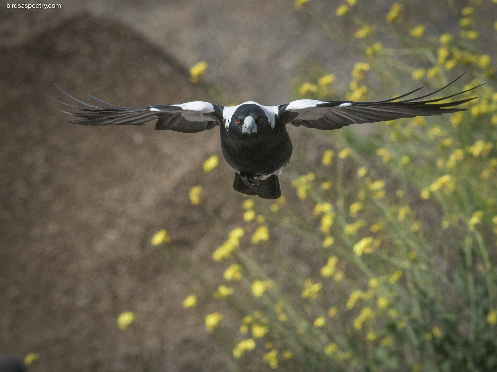

Warned before the swoop.
 400 m Magpie · tap to mark a swoop
400 m Magpie · tap to mark a swoop
Magpie ahead180 m · Northbourne Ave · last 3 Nov
CLEAR Magpies · tap to mark a swoopSwoop Ahead is a free extension for the Hammerhead Karoo. It beeps about 250 m before a known magpie swooping spot.
Install on your KarooFree · no account · August to November